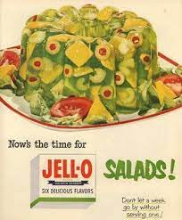

Jello salad simply put wtf

I don't know what to say about this one it looks like vomit and pretty sure it tastes like it too
Ingredients
- 1 (3 ounce) package lemon flavored Jell-O® mix
- 1 (3 ounce) package lime flavored Jell-O® mix
- 4 cups boiling water
- 1 tablespoon apple cider vinegar
- 2 stalks celery, finely chopped
- ½ cup chopped pimento-stuffed green olives
- 2 carrots, peeled and grated
Cooking Directions
- In a large bowl, stir together the lemon gelatin mix, lime gelatin mix, and boiling water until gelatin has
dissolved. Stir in the apple cider vinegar, cover, and refrigerate for about 1 hour to thicken.
- When the gelatin is thick but not set, stir in the celery, olives, and carrot so they are evenly dispersed
throughout. Pour into a 1 quart mold and refrigerate until firm, atleast 3 hours. To serve, unmold onto a
plate.
Nutrition Facts
Pretty much none, you will vomit.